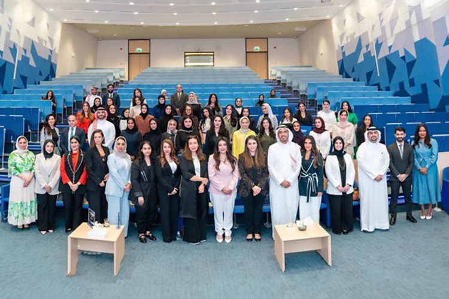
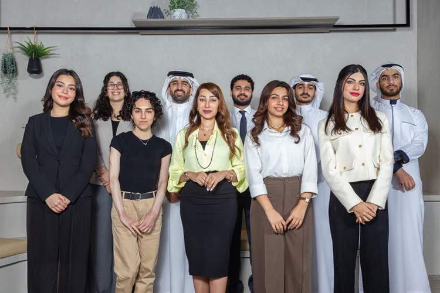
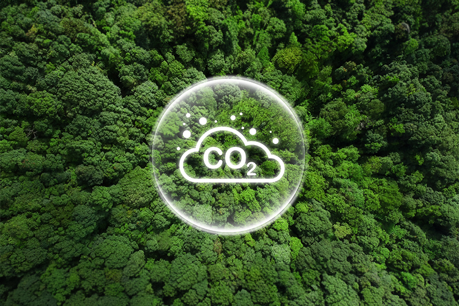

The closing ceremony of the Women in Investment Management (WIM) program highlighted the success of the initiative aimed at developing women's skills in portfolio management. Out of seventy-five applicants, twenty-six women were selected to participate in a comprehensive educational journey that included interactive workshops and open discussions. The program’s impressive outcomes, including a 90% employment rate in the financial sector for participants, underscored its effectiveness in enhancing the role of Bahraini women in the local economy. This achievement reflects SICO's commitment to promoting diversity and inclusivity in the financial sector and investing in the development of talented local professionals.

To empower the next generation of financial leaders, SICO hosted two tailored programs designed for ambitious youth: a job shadowing initiative for grade 12 students and an internship program for undergraduates from top universities in Bahrain, the UK, and the US. These programs offered immersive, hands-on experience across key departments such as asset management, investment banking, sustainability, legal affairs, brokerage, global markets, compliance, and treasury. Both initiatives aim at equipping young talents with insights and skills essential for securing their dream jobs and thriving in the rapidly evolving financial landscape.

SICO released its third annual GHG (Greenhouse Gas) report, which quantifies the carbon emissions resulting from the Bank’s daily activities and operations, providing valuable insights into its environmental footprint. In this report, SICO has shown significant strides in curbing its carbon emissions, demonstrating its strong commitment to sustainability. Total carbon emissions have witnessed a remarkable decline of 32%, dropping from 669.36 Mt CO2e in 2022 to 455.5 Mt CO2e. This was reflected in a notable 46% decline from last year’s emissions and a 6% reduction from the base year (2021). Notably, SICO's scope 1 emissions have experienced a drastic reduction, totaling only 7.87 Mt CO2e compared to 210.79 Mt CO2e in 2022.
Throughout the holy month of Ramadan, the staff at SICO came together to assemble and distribute food boxes to families in need across Bahrain. Each box was filled with essential food items designed to support those facing hardships. We hope that our efforts provided some relief during this challenging time. As a socially responsible organization, we are committed to giving back to our communities and supporting them during Ramadan.